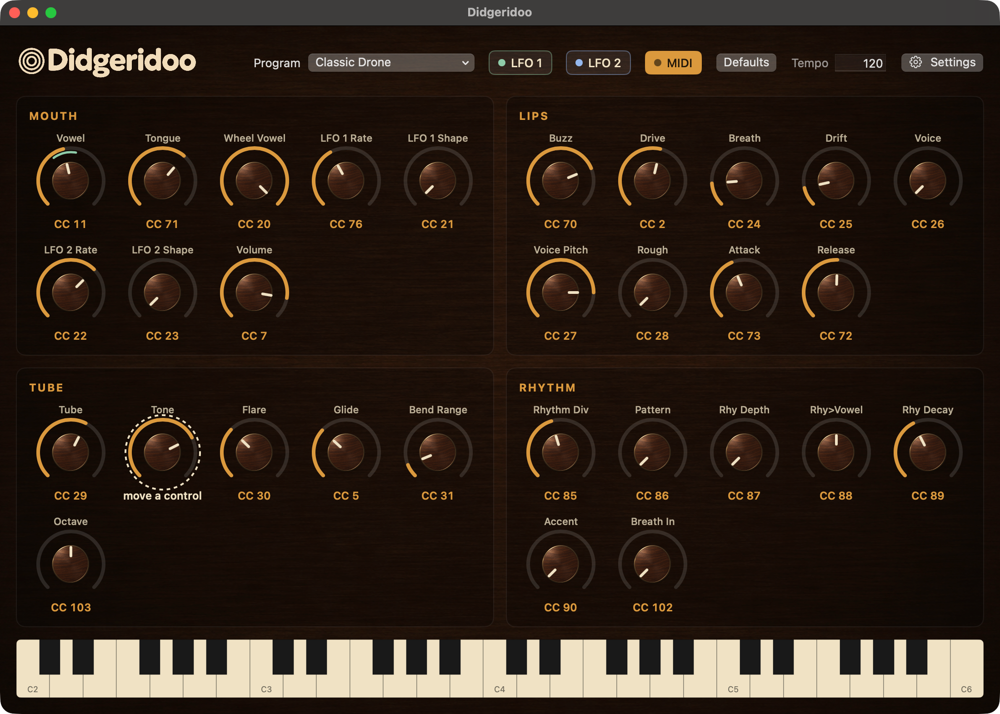

Začínáme
- Stáhněte obraz disku ze stránky ke stažení a otevřete ho.
- Přetáhněte Didgeridoo do složky Aplikace a spusťte ji odtamtud.
- Zahrajte nízkou notu na MIDI klaviatuře, nebo klikněte na klaviaturu ve spodní části okna. Aplikace poslouchá všechna připojená MIDI zařízení, dokud si v Settings nevyberete jedno.
- Chcete-li nástroj používat v programu jako Ableton Live nebo Logic Pro, otevřete Settings a klikněte na Install Audio Unit (viz Plugin Audio Unit).
Hlavní okno

- 1Název
- Název nástroje.
- 2Program, LFO 1 a LFO 2, MIDI, Tempo, Settings
- Program načte jeden z deseti vestavěných zvuků. Přepíše všechny knoby kromě Octave a utne znějící notu; vlastní úpravy se do programu neukládají. Všech deset hraje na stejný model nástroje, postavený na měřeních skutečných didgeridoo; liší se trubicí, ústy a způsobem hry. Pod těmi deseti jsou v nabídce vaše vlastní presety a příkazy, které je ukládají a mažou (viz Presety). LFO 1 a LFO 2 promění knoby v míry, o které jimi dané LFO hýbe (viz LFO). MIDI ukáže MIDI kontrolér každého knobu a dovolí knobu naučit se jiný (viz MIDI kontroléry). Tempo (20–300 BPM) určuje rychlost rytmického pulzu. Settings otevře nastavení MIDI vstupu, zvukového výstupu a instalaci pluginu Audio Unit.
- 3Mouth
- Tvar úst: kde stojí jazyk a co dronu ubírá. Jsou tu i knoby obou LFO. Viz Mouth.
- 4Lips
- Zdroj zvuku: rty, dech, hlas a to, jak noty začínají a končí. Viz Lips.
- 5Tube
- Samotný nástroj: jeho rezonance a tvar, glide, rozsah pitch bendu a oktáva. Viz Tube.
- 6Rhythm
- Pulz synchronizovaný s tempem, jeho akcenty a nádechy. Viz Rhythm.
- 7Klaviatura
- Kliknutím na klávesu ji zahrajete. U horního okraje klávesy je úhoz tichý, níž je silnější a spodní okraj klávesy je nejsilnější úhoz.
Otáčení knobem
Táhněte knob nahoru nebo dolů. S klávesou Shift se hodnota mění jemně. Dvojklik vrátí knob na hodnotu aktuálního programu nebo presetu. Aplikace si knoby, program nebo preset i tempo pamatuje mezi spuštěními.
Hraní
Didgeridoo hraje vždy jen jednu notu. Držená klávesa hraje dron; druhá klávesa na něj plynule přeladí (Glide) a po jejím puštění se ladění vrátí na klávesu, kterou stále držíte. S knobem Octave na nule leží rozsah skutečného nástroje kolem středu klaviatury: C3–G3 (MIDI noty 60–67).
- Velocity
- Silnější úhoz je hlasitější nota. Nástroj nemá přefouknutou notu: nejsilnější úhoz je hlasitý dron.
- Mod wheel
- Zvedá jazyk: posouvá Vowel nahoru nejvýše o tolik, kolik dovolí Wheel Vowel.
- Aftertouch
- Přidává zpívaný hlas nad hodnotu knobu Voice.
- Pitch bend
- Ohýbá ladění až o Bend Range půltónů.
- Sustain pedál
- Podrží dron i po puštění kláves.
Mouth (ústa)
- Vowel (0–100 %)
- Tvar úst, od otevřeného „o“ na nule, kdy jazyk leží nízko a dron je holý, po sevřené „í“ na stovce. Jak hodnota roste, jazyk se zvedá a jasné pásmo, které ve zvuku nechává, stoupá zhruba od 1 do 2,2 kHz.
- Tongue (0–100 %)
- Jak hluboko ústa do zvuku řežou. Ústa hráče nic nepřidávají: se zvednutým jazykem zvuk na třech vlastních rezonancích zadržují a pásmo, které mezi nimi zůstane, je ten jasný alikvót, který slyšíte putovat. Na nule ústa nedělají nic, ať Vowel stojí kdekoli. Pod asi 25 % knobu Vowel leží jazyk nízko a neděje se také nic; od 80 % působí naplno. Zvednutý jazyk také zvýší dron až o třetinu půltónu.
- Wheel Vowel (0–100 %)
- O kolik mod wheel posune samohlásku.
- LFO 1 Rate (0,02–20 Hz)
- Jak často LFO 1 oběhne. Čím hýbe a o kolik, se nastavuje přímo na knobech: viz LFO.
- LFO 1 Shape (Sine, Triangle, Ramp Up, Ramp Down, Square, Steps, Wander)
- Tvar jeho cyklu. Sine a Triangle se houpou; rampy stoupají nebo klesají a skočí zpět; Square přepíná mezi dvěma polohami; Steps si v každém cyklu vybere novou náhodnou polohu a drží ji; Wander si ji vybere a plynule k ní dojde.
- LFO 2 Rate, LFO 2 Shape
- Totéž pro LFO 2.
- Volume (−40 až +6 dB)
- Výstupní hlasitost. Programy jsou vyvážené pro 0 dB.
Lips (rty)
- Buzz (0–100 %)
- Jak tvrdě se rty zavírají. Dobrou polovinu každého kmitu jsou zavřené: tvrdé zavření (100) dává jasný, bzučivý dron, měkké (0) kulatý dron s málo vysokými harmonickými.
- Drive (0–100 %)
- Jak silně se do rtů fouká. Vzduchu, který jimi projde, nemůže být víc, než kolik dovolí tlak dechu, takže při širokém otevření se každé fouknutí zploští: víc Drive dává plnější, drsnější tón se silnějšími harmonickými. Působí přímo na rty, ještě než zvuk tvarují ústa a trubice.
- Breath (0–100 %)
- Šum dechu. Prochází, jen když jsou rty otevřené, takže přichází v dávkách ve výšce dronu a ústa i trubice ho barví stejně jako dron.
- Drift (0–100 %)
- Pomalé náhodné kolísání ladění, nejvýše asi o třetinu půltónu. Skutečný dron drží ladění pevně: pro věrný zvuk ho nechte nízko.
- Voice (0–100 %)
- Zpěv do trubice tak, jak ho dělají hráči: hlas otevírá a zavírá stejný proud vzduchu jako rty, v intervalu Voice Pitch nad dronem. Kvinta nebo decima přidá tón o oktávu pod dronem. Aftertouch hlas přidává.
- Voice Pitch (Unison, Third, Fourth, Fifth, Octave, Tenth, Twelfth)
- Interval zpívaného hlasu nad dronem: prima, tercie, kvarta, kvinta, oktáva, decima, duodecima. Jsou to intervaly, na kterých se hlas s dronem zamkne a stojí; hráči zpívají nejčastěji decimu.
- Rough (0–100 %)
- Vytáhne hlas ze zámku, nejvýše o třetinu půltónu, takže se proti dronu chvěje: chrapot.
- Attack (5–2000 ms)
- Jak rychle nota nastoupí.
- Release (10–3000 ms)
- Jak rychle po puštění klávesy dozní.
Tube (trubice)
- Tube (0–100 %)
- Rezonance samotného nástroje. Nejnižší leží těsně pod dronem a nechá základní tón vyniknout vysoko nad jeho harmonické, jako u skutečného didgeridoo; ostatní stojí tam, kam je položí Flare. Hlasitost zůstává zhruba stejná. Na nule je trubice vynechaná.
- Tone (200–8000 Hz)
- Do této frekvence trubice vyzařuje vyšší harmonické silněji než nižší; nad ní už ne. Nižší hodnota je temnější.
- Flare (0–100 %)
- Tvar trubice. Na nule je to rovná roura, která zvýrazňuje liché harmonické dronu a zní dutě; vyšší hodnoty jsou přírodní nástroje, které se ke konci rozšiřují a jejichž harmonické nad základním tónem jsou slabé.
- Glide (0–1000 ms)
- Jak dlouho trvá sklouznutí z jedné noty na druhou.
- Bend Range (0–12 st)
- Rozsah pitch bendu v půltónech. Rty hráče pohnou dronem celkem asi o půltón.
- Octave (−2 až +2)
- Posouvá celý nástroj po oktávách. Na nule zní klávesa o dvě oktávy níž než její MIDI nota, takže rozsah didgeridoo leží kolem středu klaviatury. +2 hraje přímo MIDI notu, pro pady a klaviatury, které začínají nízko. Znějící nota na novou oktávu plynule přeladí. Programy tento knob nechávají tam, kam jste ho dali.
Rhythm (rytmus)
Pulz začíná na každém kroku v plné síle a do dalšího kroku slábne. Když jsou Rhy Depth, Rhy>Vowel, Accent i Breath In na nule, nedělá nic. V aplikaci běží v tempu nastaveném v poli Tempo; v hostitelském programu sleduje skladbu.
- Rhythm Div (1/64 až 2/1)
- Délka jednoho kroku, včetně triolových (T) a tečkovaných (D) hodnot.
- Pattern (Even, A-b, A-b-b, A-b-b-A-b-A)
- Které kroky jsou akcenty (A) a které měkké (b). Na měkkém kroku posouvá Rhy>Vowel samohlásku opačným směrem, jako když se jazyk po akcentu vrací. Even bere všechny kroky stejně.
- Rhy Depth (0–100 %)
- O kolik hlasitost mezi pulzy klesne.
- Rhy>Vowel (−100 až +100 %)
- O kolik každý pulz posune Vowel: kladné hodnoty jazyk zvedají, záporné ho spouštějí.
- Rhy Decay (0–100 %)
- Tvar pulzu, od dlouhého náběhu na nule po krátký úder na stovce.
- Accent (0–100 %)
- O kolik hlasitěji začíná krok s akcentem, při kterém se rty na okamžik zavírají tvrději, a o kolik tišší jsou měkké kroky.
- Breath In (0–100 %)
- Rychlý nádech nosem na každém měkkém kroku, jako při cirkulárním dýchání: první pětinu sekundy dron poklesne, je slyšet dech a jazyk povolí. Potřebuje pattern s měkkými kroky.
LFO
Dvě LFO umějí hýbat knoby za vás. Každé obíhá svou rychlostí a ve svém tvaru (jejich čtyři knoby jsou ve skupině Mouth) a každý knob, kterým lze hýbat, má pro každé LFO svou míru: o kolik jím to LFO na obě strany pohne, jako část dráhy knobu. LFO knobem neotáčí; přičítá se k tomu, kde knob stojí.

- Nastavení míry
- Klikněte v hlavičce na LFO 1 nebo LFO 2. Knoby teď ukazují míry toho LFO, v jeho barvě: tažením nahoru nastavíte kladnou míru, dolů zápornou, která pohyb obrátí. Oblouk uvnitř prstence knobu ukazuje část dráhy, kterou LFO projíždí. Dvojklik vrátí míru na hodnotu programu nebo presetu. Dalším kliknutím na tlačítko se vrátíte ke knobům.
- Čím lze hýbat
- Vowel, Tongue, Volume, Buzz, Drive, Breath, Voice, Rough, Tube, Tone, Flare, Rhy Depth, Rhy>Vowel, Rhy Decay, Accent a Breath In. Přepínače, časy a několik dalších knobů při zapnutém tlačítku ustoupí; vlastní knoby LFO zůstávají v provozu. Jedním knobem mohou hýbat obě LFO: jejich pohyby se sčítají a zastaví se na koncích dráhy knobu.
- Jak je to vidět
- S oběma tlačítky vypnutými si knob, kterým LFO hýbe, nechává svůj oblouk, šalvějově zelený pro LFO 1 a světle modrý pro LFO 2, takže hned vidíte, co se hýbe. Ukazatel knobu zůstává tam, kam jste ho dali.
- Výchozí stav
- Ve většině programů LFO 1 trochu houpe knobem Vowel: pomalý pohyb úst. LFO běží samy a nová nota je nespouští znovu. Míry se ukládají se zvukem a v hostitelském programu je každá samostatným parametrem („LFO 1>Vowel“), který lze automatizovat.
MIDI kontroléry
Každý knob poslouchá jeden MIDI kontrolér (control change, CC): pohnete ovladačem a knob se postaví tam, kam ovladač říká, od spodního konce dráhy při hodnotě 0 po horní při 127 (Rhy>Vowel, který má střed, na něm stojí při 64). Knoby mají z výroby kontroléry uvedené níže a každý se může naučit jiný.

- Jak knob naučit
- Klikněte v hlavičce na MIDI: pod každým knobem je jeho kontrolér. Klikněte na knob, čárkovaný kroužek ukáže, že poslouchá; teď pohněte ovladačem na svém MIDI kontroléru. Knob si ten ovladač vezme a postaví se tam, kde ovladač stojí. Jeden kontrolér hýbe jen jedním knobem, takže knob, který ho měl předtím, zůstane bez něj („—“). Dalším kliknutím na poslouchající knob učení zrušíte a dalším kliknutím na MIDI se vrátíte ke knobům.
- Jak to vrátit
- Dvojklik vrátí knobu kontrolér, který měl z výroby. Sekundární klik na knob nabídne totéž a No controller. Tlačítko Defaults, které je vedle tlačítka MIDI, dokud je zapnuté, to udělá pro všechny knoby.
- Mouth
- Vowel 11, Tongue 71, Wheel Vowel 20, LFO 1 Rate 76, LFO 1 Shape 21, LFO 2 Rate 22, LFO 2 Shape 23, Volume 7
- Lips
- Buzz 70, Drive 2, Breath 24, Drift 25, Voice 26, Voice Pitch 27, Rough 28, Attack 73, Release 72
- Tube
- Tube 29, Tone 74, Flare 30, Glide 5, Bend Range 31, Octave 103
- Rhythm
- Rhythm Div 85, Pattern 86, Rhy Depth 87, Rhy>Vowel 88, Rhy Decay 89, Accent 90, Breath In 102
- Co knobům nepatří
- Mod wheel (CC 1) a sustain pedál (CC 64) dělají dál svou práci (viz Hraní), stejně jako kontroléry, které si MIDI nechává pro sebe: 0, 6, 32, 38, 96–101 a 120–127. Knob se je nenaučí. Míry LFO kontroléry nemají.
- Kde se to ukládá
- Aplikace si kontroléry pamatuje mezi spuštěními. Nepatří k programu: načtení programu je nechá být. Knob skočí na místo svého kontroléru ve chvíli, kdy ovladačem pohnete.
- OXI E16
- Pro kontrolér OXI E16 je připravena definice nástroje s těmito kontroléry: Didgeridoo.oxiindef. Importujte ji v aplikaci OXI App. Pojmenovává každý knob a nese hodnotu kontroléru pro jeho výchozí polohu; je v ní i mod wheel a sustain pedál. Rozsahy nechte na 0 až 127, i u přepínačů: nástroj na ně rozkládá celou dráhu knobu.
Presety
Preset je váš vlastní zvuk pod jménem: všechny knoby tak, jak stojí, včetně oktávy a měr LFO. Presety jsou v nabídce Program pod deseti vestavěnými programy a ten, který se používá, je zaškrtnutý.
- Uložení
- Zvolte Program › Save Preset…, napište jméno a stiskněte Return. Zvuk se uloží tak, jak právě je, a nabídka ukáže preset jako používaný. Jméno, které už existuje, ten preset nahradí; tlačítko se pak jmenuje Replace.
- Načtení
- Zvolte preset v nabídce Program. Stejně jako program přepíše knoby a utne znějící notu; na rozdíl od programu nastaví i Octave. Dvojklik na knob pak vrací hodnotu presetu.
- Smazání
- Když se preset používá, Delete s jeho jménem ho přesune do Koše. Zvuk zůstane, jak je.
- Soubory
- Každý preset je soubor ve složce Library/Application Support/Didgeridoo/Presets ve vaší domovské složce; Show in Finder ji otevře. Zkopírováním souborů si presety přenesete na jiný Mac; přejmenováním souboru preset přejmenujete. MIDI kontroléry a tempo k presetu nepatří.
- V hostitelském programu
- Okno pluginu má stejnou nabídku a stejné presety: zvuk uložený v aplikaci je za okamžik i v pluginu a naopak. Hostitelský program ukazuje jméno presetu jako preset pluginu a zvuk dál ukládá se svým projektem.
Nastavení
- MIDI input › Device
- All devices (výchozí, všechna zařízení), None (žádné), nebo jedna připojená klaviatura či kontrolér. Vybrané zařízení, které odpojíte, zůstane v seznamu s poznámkou „not connected“; jakmile ho znovu připojíte, aplikace ho začne zase poslouchat.
- MIDI input › Channel
- All channels (všechny kanály) nebo jeden z kanálů 1–16; zprávy na ostatních kanálech se ignorují.
- MIDI port „Didgeridoo“
- Dokud aplikace běží, mohou jiné aplikace posílat MIDI do portu Didgeridoo. Je vždy zapnutý a řídí se nastavením kanálu.
- Audio output › Device
- System default (výchozí výstup systému) nebo konkrétní zvukové zařízení. System default sleduje výstup zvolený v macOS, i když se změní za běhu aplikace (například když připojíte sluchátka). Vybrané zařízení, které odpojíte, zůstane v seznamu s poznámkou „not connected“: zvuk jde do výchozího výstupu systému, dokud zařízení znovu nepřipojíte.
- Audio output › Channels
- Zobrazí se u vybraného zařízení se čtyřmi a více výstupy: dvojice kanálů, do které zvuk půjde. Nově vybrané zařízení začíná na první dvojici. Nástroj je mono; oba kanály nesou stejný signál.
- Audio Unit plug-in
- Ukazuje, jestli je plugin nainstalovaný a v jaké verzi; Install Audio Unit ho nainstaluje nebo aktualizuje.
Plugin Audio Unit
- V aplikaci otevřete Settings a klikněte na Install Audio Unit. Soubor Didgeridoo.component se zkopíruje do ~/Library/Audio/Plug-Ins/Components.
- Restartujte hostitelský program nebo ho nechte znovu prohledat pluginy. V Abletonu Live musí být Audio Units zapnuté v Settings › Plug-Ins.
- Nástroj se objeví jako Didgeridoo od výrobce Jiri Pisa mezi nástroji Audio Unit.

Plugin má stejný zvuk, stejné knoby a LFO a stejných deset programů (jako tovární presety) jako aplikace. Jeho okno je panel z aplikace: nabídka Program, tlačítka LFO a MIDI a knoby skupin Mouth, Lips, Tube a Rhythm. Tempo, nastavení MIDI a zvuku i klaviaturu má hostitelský program vlastní, proto v okně nejsou. Knoby sledují automatizaci hostitelského programu a otočení knobem lze jako automatizaci nahrát. Plugin také reaguje na MIDI kontroléry, které mu hostitelský program předá, a má stejné tlačítko MIDI pro učení knobů; které kontroléry hýbou kterými knoby, se ukládá s projektem. Vaše vlastní presety jsou tytéž jako v aplikaci: nabídka je i tady ukazuje a ukládá. Zvuk se ukládá s projektem. Rytmický pulz sleduje tempo a pozici ve skladbě.
Po aktualizaci aplikace klikněte na Install Audio Unit znovu, aby se aktualizoval i plugin.
Aktualizace
Při každém spuštění se Didgeridoo podívá, jestli existuje novější verze, a pokud ano, nabídne ji; bez vašeho souhlasu se nic nenainstaluje. Didgeridoo › Check for Updates… se zeptá hned.